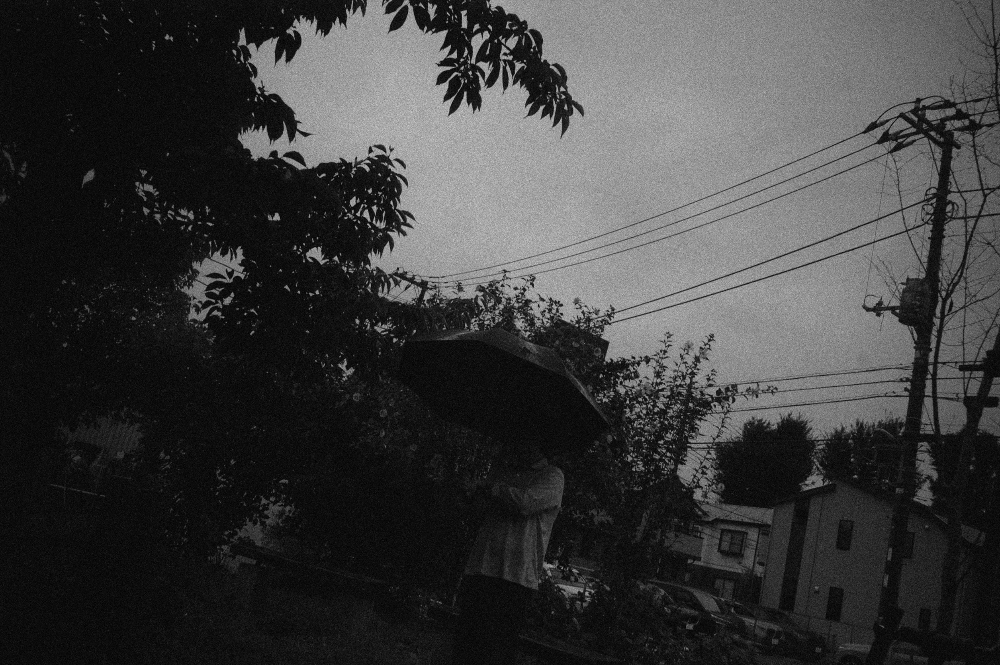

Kantaro Kometani
[kãntaɾo̞ kome̞tani]
東京を拠点に活動するミュージシャン。
学生時代よりギタリストとして様々なバンドで活動し、2016年よりバンド「揺らぎ」へギタリストとして参加。FLAKE SOUNDS（FLAKE
RECORDS）より『Still Dreaming, Still Deafening (2018)』、『For you, Adroit it but soft (2021)』、『Here I
Stand
(2023)』、『In Your Languages (2025)』をリリース。『Still Dreaming, Still
Deafening』以降、作曲及び作詞を手掛ける。その他、様々なアーティストのコラボレーター、リミキサーとして作品に参加するほか、CMや映像作品への楽曲提供、DJ、プロデュース、ディレクション、デザインを行う。
Kantaro Kometani is a Tokyo-based musician.
He began playing guitar in various bands while still a
student and joined Yuragi as a guitarist in 2016.
With the band, he has released 'Still Dreaming,
Still
Deafening' (2018), 'For you, Adroit it but soft' (2021), 'Here I Stand' (2023), and 'In Your
Languages'
(2025) via FLAKE SOUNDS (FLAKE RECORDS). Since 'Still Dreaming, Still Deafening', he has also
contributed to the band’s work as a composer and lyricist. Outside Yuragi, he works with a wide range
of
artists as a collaborator and remixer, and composes music for commercials, films, and other visual
media. His practice also encompasses DJing, production, creative direction, and design. He welcomes
commissions and collaborations across these fields.